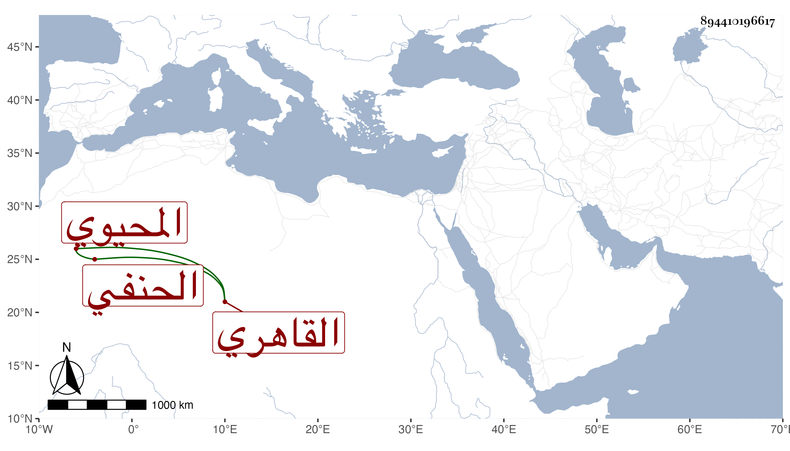

0902Sakhawi.DawLamic.ITO20230111-ara1.EIS1600.894410196617
Biography ID: 894410196617
793
عبد القادر بن محمد المحيوي القاهري الحنفي ويعرف بابن الدهانة ويقال اسم جده راشد حسبما أخبرني به غير واحد وأنه كان من الموالي وأن الدهانة جدته واشتهرت بذلك لكونها كانت تستخرج الدهن من العظام بالنار بحيث لقبها بعضهم بالعظامية وهو خلاف ما قيل من كونها كانت تدهن الطارات والله أعلم بذلك كله نعم كان أبوه ماطيا طاراتيا فنشأ ابنه وكان مولده سنة أربع وأربعين فحفظ القرآن والكنز والمنار ولازم الأمين الاقصرائي والقاضي سعد الدين بن الديري والتقي الشمني وسيف الدين قراءة وسماعا في الفقه وأصوله والعربية وغيرها وقرأ أيضا على العلاء الحصني بل يقال أنه قرأ في ابتداء أمره على أبي الفضل المحلي ، وتميز في الفضيلة ، وحج في سنة سبعين وناب في القضاء عن المحب بن الشحنة ثم ترفع بأخرة عن ذلك وصار أحد المفتين بل استقر في مشيخة المؤيدية عقب التاج بن الديري بمال لملاءته الزائدة من قبل أبيه وغيره وكنا نترجاها لشيخي البدري بن الديري سيما وقد باشرها . وناكد الصوفية بل الشاد بها مرة بعد أخرى ونصره السلطان بحيث أوقع ببعضهم وكاد الايقاع ببعض أعيانهم وقبل ذلك استنزل الكمال بن أبي الصفا عن تدريس الناصرية وتصدر بجامع الأزهر وربما ذكر للقضاء وله نظم فيما قيل وليس ما يذكر مما تقدم إن صح بقادح في فضيلته فمن أبطأه عمله لم يسرع به نسبه
